| year | month_of_year | day_of_month | hour | minute | x | y |
|---|---|---|---|---|---|---|
| 2020 | 9 | 2 | 18 | 0 | 494582.9 | 5457918 |
| 2020 | 9 | 3 | 0 | 0 | 491616.0 | 5459278 |
| 2020 | 9 | 3 | 21 | 0 | 494921.9 | 5456620 |
| 2020 | 9 | 3 | 23 | 0 | 487343.6 | 5457417 |
| 2020 | 9 | 10 | 13 | 0 | 486631.2 | 5455385 |
| 2020 | 9 | 13 | 18 | 0 | 484901.1 | 5456897 |
| 2020 | 9 | 14 | 16 | 15 | 491116.9 | 5458996 |
| 2020 | 9 | 22 | 15 | 50 | 498229.3 | 5453280 |
| 2020 | 9 | 24 | 22 | 0 | 496839.3 | 5450338 |
| 2020 | 9 | 28 | 13 | 30 | 491827.1 | 5459080 |
16 Mapping crime over time
Understanding how crime varies over time is essential for effective crime analysis. This chapter introduces techniques for readers identifying short-term and long-term variations in crime. You will learn how to handle date and time data, visualize temporal changes, and create animated maps to illustrate crime trends dynamically.
TipBefore you start
Open RStudio or – if you already have RStudio open – click Session then Restart R. Make sure you’re working inside the Crime Mapping RStudio project you created in Section 1.5, then you’re ready to start mapping.
16.1 Introduction
Understanding how crime varies over time is just as important as understanding how it varies between places. Very few places are hotspots of crime all the time – business districts might be hotspots of pickpocketing in the daytime but deserted at night, while a nearby entertainment district may be quiet in the daytime but a violence hotspot at night.
Crime varies over time in lots of ways. For example, there was a long-term drop in many types of crime in many countries starting in the mid 1990s, e.g. residential burglary in England and Wales dropped by 67% between 1993 and 2008 while the number of homicides in New York City dropped almost 90% from 2,245 in 1990 to 289 in 2018.
There are also short-term variations in crime. Many types of crime are more common at some types of year than others (known as seasonal variation). In Chicago, for example, assaults, residential burglaries and personal robberies all vary throughout the year, with assaults in particular being consistently higher in summer than winter.
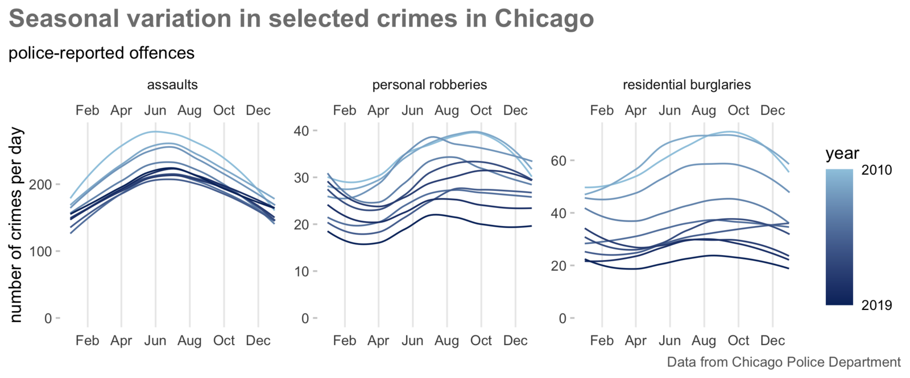
It is also important to understand short-term variation in crime. For example, both property damage and sexual violence in Chicago peaks at weekends, while there are fewer shoplifting offences on Sundays when some shops are closed or have shorter opening hours.
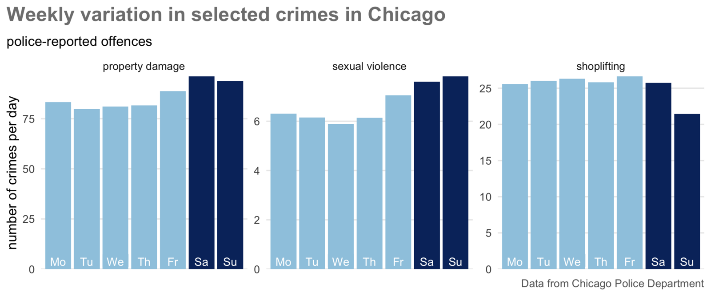
Understanding variation in crime over time is important because we can use the temporal concentration of crime to focus efforts to respond to crime most effectively. For example, imagine we wanted to deploy police patrols to a hotspot to respond to a particular crime problem. Such patrols could be very effective if they were targeted at the times when crimes were most likely to happen or completely useless if the officers were deployed at the wrong day or the wrong time.
In this chapter we will learn how to incorporate variation over time into our analysis of where crime happens, including making animated maps like this one:

QuizAnalysing temporal variation in crime
Is it important to think about variation over time when analysing crime patterns?
Which of the following statements about seasonal variations in crime is correct?
16.2 Handling dates in R
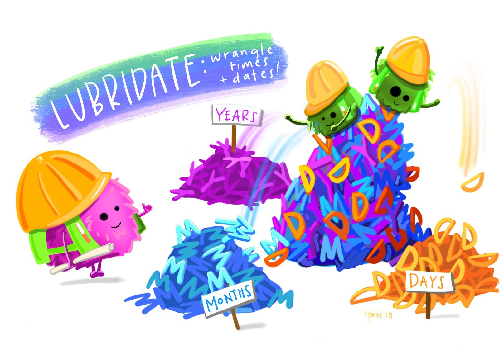
At a very basic level, computers can store data in two ways: they can store numbers and they can store text. This makes storing dates slightly complicated, because dates aren’t completely like numbers and they aren’t completely like text either. Dates aren’t like numbers because you can’t do normal maths with dates (e.g. what date is the 29th of January plus one month?) and aren’t like text because you can do some maths with them (e.g. it is easy to calculate three days from today). Dates are especially complicated because they can be written as text in so many different ways. For example 17 January can be represented in all of these ways, all of them equally valid (although some are specific to particular countries):
- 17/01/2025
- 17.01.25
- 1/17/2025
- 2025-01-17
- 17 Jan 25
- 17 January 2025
- January 17th 2025
R deals with this problem by storing dates internally as if they were numbers and displaying them (e.g. in the console or in a Quarto document) as if they were text, by default in the format 2025-03-18. Fortunately, we don’t have to worry about how dates and times are stored internally in R because we can use the lubridate package to work with them. lubridate contains functions for working with dates, including extracting parts of a date with functions such as month() and converting text to date values with functions like ymd().
Because of the special nature of dates, if we want to work with a date variable (for example to create a chart of crime over time) it is important that it is stored as a date, not as text or as a number. Many R functions for reading data, including read_csv(), read_tsv() and read_excel(), will try to recognise columns of data that contain dates and times stored in common formats. These will automatically be stored as date variables when the data is loaded.
If R does not recognise automatically that a value contains a date, we can convert it to a date by using the date-parsing functions from lubridate. Which function to use depends on the order in which the components of the date (e.g. day, month and year) appear in the variable. For example, to convert the text “17 January 1981” to a date format we can use the dmy() function because the day of the month comes first, the month next and then the year. Similarly, converting the text “01/17/81” needs the function mdy(). Note that the lubridate date-parsing functions are able convert both numeric and text-based months, and to ignore elements that aren’t needed for the conversation, such as weekday names.
If a date is stored in multiple columns in a dataset, e.g. one column for the year, one column for the month and one column for the day, we can create a single date column using the make_date() function to combine them. Similarly, we can create a date-time column using the make_datetime() function. For example, imagine we have a dataset of crimes called thefts:
We could use the three columns year, month_of_year and day_of_month to create a column containing the full date using the code:
Hypothetical code
# A tibble: 1,840 × 8
year month_of_year day_of_month hour minute x y date
<dbl> <dbl> <dbl> <dbl> <dbl> <dbl> <dbl> <date>
1 2020 9 1 0 0 490778. 5458771. 2020-09-01
2 2020 9 1 0 0 492552. 5456983. 2020-09-01
3 2020 9 1 0 0 495975. 5456581. 2020-09-01
4 2020 9 1 0 0 498185. 5453781. 2020-09-01
5 2020 9 1 0 0 490318. 5454515. 2020-09-01
6 2020 9 1 0 0 493661. 5458708. 2020-09-01
7 2020 9 1 0 0 492757. 5458792. 2020-09-01
8 2020 9 1 0 0 497944. 5458721. 2020-09-01
9 2020 9 1 1 0 489018. 5457169. 2020-09-01
10 2020 9 1 2 8 493537. 5454987. 2020-09-01
# ℹ 1,830 more rowsOnce we have converted dates stored as text to dates stored as dates, R understands that they are dates and we can do things like compare them. So while running "Sat 17 January 1981" == "01/17/81" to test if two dates are the same would give the answer FALSE (because the two pieces of text are different), once we’ve converted the text to date values R can tell that the two dates are the same:
R Console
[1] TRUER Console
[1] FALSER Console
[1] TRUE16.2.1 Working with dates
When analysing dates and times, it is often useful to be able to extract date or time portions. We can do this with the lubridate functions year(), month(), wday() (for day of the week), mday() (for day of the month), yday() (for day of the year, counting from 1 January), hour(), minute() and second(), each of which extracts the relevant portion of a date or time as a number. The month() and wday() functions are slightly different, because they can also return the day or month name as text by specifying the argument label = TRUE. We can see this by extracting the different portions of the current date and time, which we can retrieve with the now() function from lubridate.
R Console
message("Current year: ", year(now()))
message("Current month (as a number): ", month(now()))
message("Current month (as text, abbreviated): ", month(now(), label = TRUE))
message("Current month (as text): ", month(now(), label = TRUE, abbr = FALSE))
message("Current day of the year (days since 1 Jan): ", yday(now()))
message("Current day of the month: ", mday(now()))
message("Current day of the week (as a number): ", wday(now()))
message("Current day of the week (as text): ", wday(now(), label = TRUE))
message("Current hour of the day: ", hour(now()))
message("Current minute: ", minute(now()))
message("Current second: ", second(now()))Current year: 2025Current month (as a number): 3Current month (as text, abbreviated): MarCurrent month (as text): MarchCurrent day of the year (days since 1 Jan): 77Current day of the month: 18Current day of the week (as a number): 3Current day of the week (as text): TueCurrent hour of the day: 12Current minute: 43Current second: 4.4679479598999It is sometimes useful to be able to add to or subtract from dates. For example, if you wanted to filter a dataset so that only records from the past 28 days were included, you would need to work out the date 28 days ago. We can do this with a group of functions from lubridate that store a period of time that we can then add to or subtract from an existing date. These functions are years(), months(), weeks(), days(), hours(), minutes(), and seconds().
ImportantRemember which lubridate functions extract parts of a date and which manipulate them
In the lubridate package, functions that are used to extract parts of a date are singular, e.g. day(), month(), year(). Functions that are used to manipulate dates by adding or subtracting from them are plural, e.g. days(), months(), years(). So, for example, you would use the code month(now()) to extract the month (as a number between 1 and 12) from the current date but the code now() + months(1) to find out what the date and time will be one month from now.
To subtract 28 days from today’s date (which we can retrieve with the today() function), we would use today() - days(28).
Today is 2025-03-18 and 28 days ago was 2025-02-18Adding or subtracting periods from dates can be very useful when combined with the filter() function from the dplyr() package. For example, if we had a dataset of crimes stored in an object called crimes and wanted to extract only those that occurred in the most-recent seven days, we could do this:
If we wanted to extract crimes that occurred between two dates, we can use the between() function from dplyr, which returns either TRUE or FALSE depending on whether each item in the first argument is between the values given in the second and third arguments (inclusive).
When filtering based on dates or times, it is important to understand that R can store dates in two ways: as a date object or as a date-time object (shown as <dttm> when we print a tibble). Date variables store only a date with no time, while date-time variables always include a time component, even if the data doesn’t contain any information about time. If we store a variable that only has information about the date of an event as a date-time variable, R will silently add the time midnight to each date. This is important because if we compare a date variable to a date-time variable, R will silently convert the dates to date-times with the times set to midnight. If we are trying to filter crimes between two times, this might not be what we want. For example, if we used the code:
to extract all the crimes that occurred in January 2021, that would work as we expected only if offence_date was a date variable. If the offence_date column instead held dates and times, R would filter the data as if we had specified:
which would exclude any crimes that occurred on 31 January (except those occurring at exactly midnight). To deal with this problem, we can either check to make sure the variables we are filtering on are date variables, convert them to date variables using the as_date() function, or assume that they might be date-time variables and specify the exact time that we want as the end of our range. For example, specifying:
or
would allow us to select all the crimes occurring in January 2021.
QuizHandling dates in R
What function from the lubridate package would you use to convert “17/01/2025” into a proper date format?
How can you extract the month from a date variable in R?
16.3 Showing change over time
One common task in crime analysis is to show how crime changes over time. The simplest way to do this is to produce a time-series chart. For example, we can see how the frequency of aggravated assaults recorded by police in Chicago has changed over time:
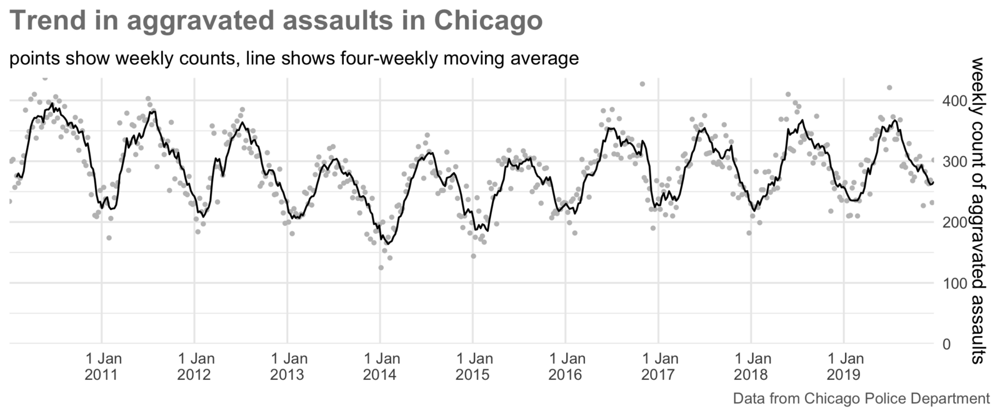
In this section we will learn how to construct a time-series chart like this. To illustrate this process, we will use an object called assaults that contains records of aggravated assaults in Chicago from 2010 to 2019.
Open a new R script file and save it as chapter16a.R. Add this code to the file and run it.
chapter16a.R
# Load packages
pacman::p_load(ggspatial, sf, sfhotspot, slider, tidyverse)
# Load Chicago aggravated assault data
assaults <- read_csv("https://mpjashby.github.io/crimemappingdata/chicago_aggravated_assaults.csv.gz")
# Load dataset of Chicago Police Department (CPD) district boundaries
cpd_districts <- read_sf("https://mpjashby.github.io/crimemappingdata/chicago_police_districts.kml") |>
janitor::clean_names() |>
# Transform this object to use a suitable local co-ordinate reference system
st_transform("EPSG:26916")
# Create a separate dataset holding just the boundaries of the three CPD
# districts covering the downtown area
cpd_central <- filter(cpd_districts, name %in% c("1", "12", "18"))Rows: 148636 Columns: 5
── Column specification ────────────────────────────────────────────────────────
Delimiter: ","
chr (1): loc_cat
dbl (3): longitude, latitude, district
dttm (1): date
ℹ Use `spec()` to retrieve the full column specification for this data.
ℹ Specify the column types or set `show_col_types = FALSE` to quiet this message.The first task in charting the frequency of crime is to choose a temporal unit of analysis. For example, the chart above counts the number of crimes each week. Weeks are often a good choice as units for counting crimes, since all weeks are the same length and because many human activities have a weekly cycle (e.g. people do different things at weekends than on weekdays, even though which days count as weekdays differs across cultures).
ImportantMonths are usually a bad choice of temporal unit of analysis
Months are much less useful than weeks as a temporal unit of analysis because months differ in length, so monthly counts of crime will look like they show some variation even if the amount of crime occurring each day remains constant. For example, if exactly 10 crimes occur every day throughout February and March, there will be 280 or 290 crimes in February (depending on whether it is a leap year) but 310 in March. In these circumstances, it will look like the volume of crime increased by 11% between February and March, not because the rate at which crimes occurred increased but because March is 11% longer than February.
Months are also less useful because they contain different numbers of each day of the week (e.g. one month might have four Fridays while the next has five) and crimes are typically concentrated on particular days of the week (more on that later). Avoid using monthly counts of crime unless you have no choice because the only data you have available is monthly counts.
To count the number of crimes occurring each week we can use the count() function from the dplyr package. But before doing that, we have to allocate each crime to a week so that we can then count those weeks rather than counting days. To do this we use the floor_date() function from the lubridate package. This function rounds dates down to the start of a specified unit of time, in this case a week. By default, floor_date() treats Sunday as the start of the week and so if the specified unit of time is a week, all dates will be rounded down to the date of the previous Sunday.
floor_date() works on date variables, so if we want to use it on a date-time variable we should first convert it to a date variable using the as_date() function from lubridate. So to convert a date-time stored in a variable called date into the date of the first day of that week, we would use the code floor_date(as_date(date), unit = "week").
One complication of counting incidents by week is that our data might not fit neatly into calendar weeks. For example, if we have data for a particular year and that year started on a Tuesday, the first weekly count will only have data for five days and it will look like there were fewer crimes that week in comparison to other weeks. This could be misleading, since this week only looks like it has less crime because we don’t have data for the whole week. The same problem can happen with the last week of data, too. To deal with this, after counting the crimes by week we will remove the first and last row of the data using the slice() function from the dplyr package.
chapter16a.R
# Count number of aggravated assaults each week
assault_weekly_counts <- assaults |>
# Convert offence dates so that it appears each offence happened on the first
# day (Sunday) of the week
mutate(week_date = floor_date(as_date(date), unit = "week")) |>
# Count the number of assaults each week
count(week_date, name = "count") |>
# The code `(n() - 1)` gives us the row number of the second-to-last row in
# the data because `n()` returns the number of rows in the data. Note the
# parentheses!
slice(2:(n() - 1))# A tibble: 6 × 2
week_date count
<date> <int>
1 2010-01-03 234
2 2010-01-10 300
3 2010-01-17 303
4 2010-01-24 257
5 2010-01-31 276
6 2010-02-07 264Now we have weekly counts of aggravated assaults, we can plot them on a chart. The simplest way to do this would be to create a line chart using ggplot() with geom_line().
R Console
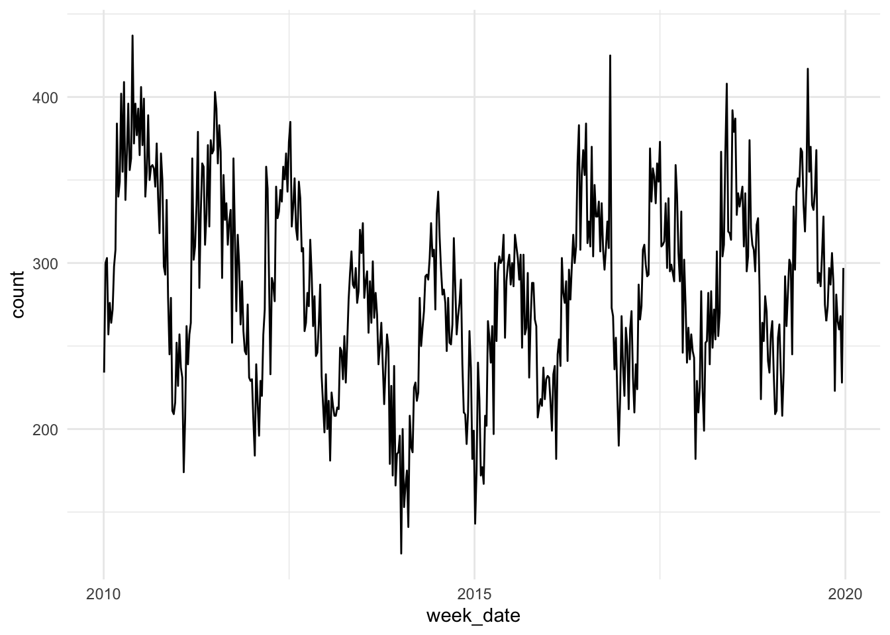
This plot is fine, but there are several things that we can do to make it better. Most importantly, there seems to be lots of short-term fluctuation in the frequency of crime (e.g. from one week to another). While this variation is real, we often refer to it as noise because it can obscure the signal of longer-term trends (this terminology originally came to statistics – and therefore crime analysis – from radio engineering and has become common over time).
We can reduce the visual impact of this short-term variation on our plot by adding a line showing a moving average (also called a rolling average or rolling mean) of the count of crime over time. A moving average is the average (or mean) of the count of crimes in the current week and a given number of adjacent (in this case, previous), weeks.
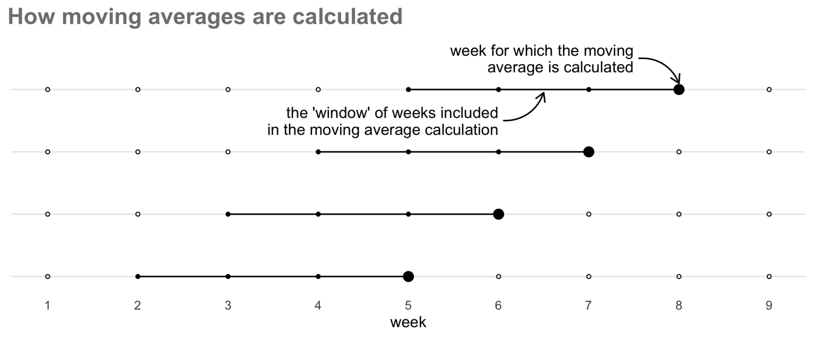
Since moving averages show the average count of crime over several weeks, they are less influenced by week-to-week variation. To calculate a moving average we have to choose how many weeks to include (known as the window of the moving average). The more weeks we include in the window, the smoother the values will appear from week to week and the more short-term variation will be obscured. There is a balance to be struck between making longer-term trends clear and obscuring genuine short-term variation, so you should experiment with different window lengths to ensure you are not over-smoothing.
We can calculate moving averages in R with the slide_dbl() function from the slider package (so called because its functions slide along a series of values). slide_dbl() can calculate several types of moving averages, so we specify that it should use the mean() function to calculate the average by specifying .f = mean (note the lack of parentheses after mean). We use the .before argument (note the .) to specify how many weeks before the current week to include in our moving average. So if we wanted to calculate a four-week moving average (i.e. the current week and the previous three weeks), we would specify .before = 3. We also specify .complete = TRUE to stop slide_dbl() from trying to calculate averages for the first few weeks in our data, because we don’t have the necessary data from previous weeks (i.e. before the start of our data) that we would need to make these averages accurate. slide_dbl() will use NA as the moving average value for those weeks, so we later need to specify na.rm = TRUE to tell ggplot() to ignore these when we plot the data.
Once we’ve calculated a moving average, we can show this using the line on our chart and show the individual weekly counts as small light-grey dots to show how much short-term variation there is in the data.
chapter16a.R
# Create plot of weekly assault counts with moving average
assault_weekly_counts |>
# Calculate moving average
mutate(moving_avg = slide_dbl(count, mean, .before = 3, .complete = TRUE)) |>
ggplot() +
# Specify which columns in the data will control which parts of the chart
aes(x = week_date) +
# Add points showing weekly counts of assaults
geom_point(aes(y = count), colour = "grey75", size = 0.75) +
# Add line showing moving average
geom_line(
aes(y = moving_avg, colour = "black"),
na.rm = TRUE,
key_glyph = "timeseries"
) +
# Specify how dates should be shown on the x axis
scale_x_date(date_breaks = "1 year", date_labels = "%b\n%Y") +
# Make sure y axis starts at zero
scale_y_continuous(limits = c(0, NA)) +
# Add legend to explain that the line shows a moving average
scale_colour_identity(
labels = c("black" = "four-week moving average"),
guide = guide_legend()
) +
# Add labels
labs(
x = NULL,
y = "weekly count of aggravated assaults",
colour = NULL
) +
theme_minimal() +
theme(
legend.position = "bottom",
panel.grid.minor.x = element_blank()
)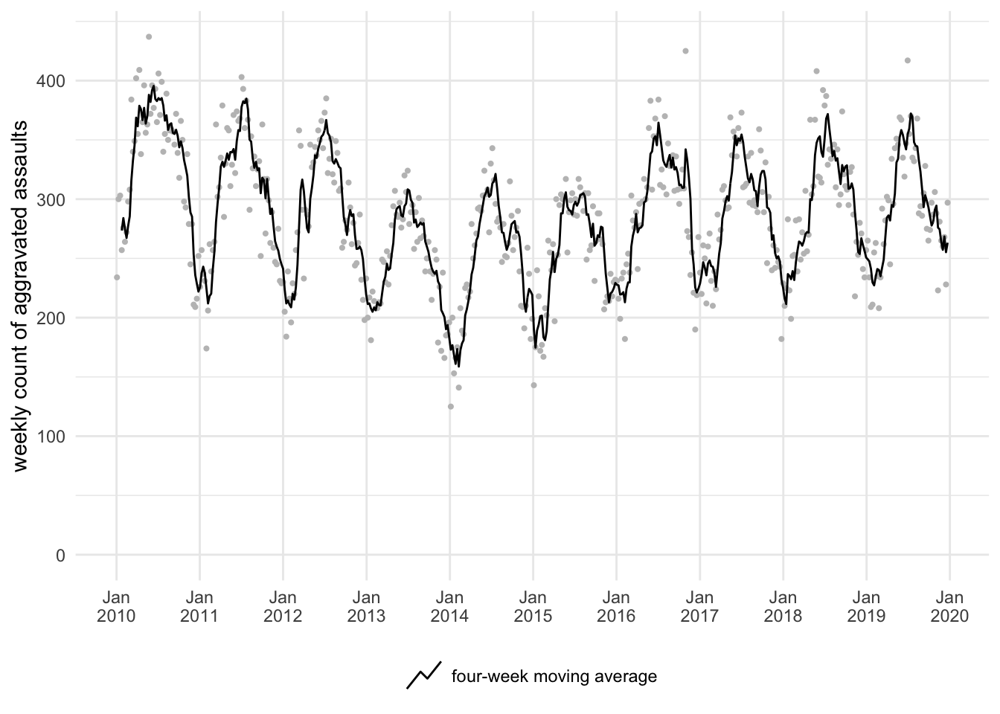
You can experiment with the effect of setting a longer or shorter window for the moving average by specifying larger or smaller values of the .before argument to slide_dbl(). For example, create an eight-week moving average by specifying .before = 7. What would happen to the apparent seasonal variation in the number of assaults (visible in the chart above) if you create an annual moving average by specifying .before = 52?
You may have noticed that in the code above we have also made some changes to the appearance of the plot to make it easier to read. Specifically, we have:
- Added a title for the y axis and removed the x axis and legend titles using the
labs()function. This is because the axis labels (e.g. ‘Jan 2010’) make it clear what the x axis shows. - Changed the labels on the x axis using
scale_x_date(). In this case, we have used the argumentdate_breaks = "1 year"to specify that we want a label at the start of each year and the argumentdate_labels = "%b\n%Y"to specify that we want each label to consist of an abbreviated month name (using the code%b), a new line (the code\nas in a previous chapter) and a four-digit year (using the code%Y). You can find a full list of codes used that can be used to specify different parts of a date and time by typing?strptimein the R Console. - Removed some of the vertical grid lines by setting the
panel.grid.minor.xargument totheme()to equalelement_blank(). - Forced the y axis to begin at zero by specifying
limits = c(0, NA), remembering thatNAin this context means to use the default value. - Specified that we want the black line to be represented in the legend by a line that looks like a time series by specifying
key_glyph = "timeseries".
We have also added a legend to explain what the black line shows. The code need to do this is slightly awkward, since ggplot() would not normally produce a legend for aesthetics (in this case, the colour of the line) that have only one value. To force ggplot() to add a legend, we:
- Specify the colour of the line (i.e.
colour = "black") not as an argument to the functiongeom_line()as we normally would but as one of the aesthetics specified usingaes(). - Specify that
ggplot()should treat the valuecolour = "black"as a literal colour name rather than as a reference to a column in the data (which is how the arguments toaes()are normally interpreted). To do this we addscale_colour_identity()to theggplot()stack, because identity is the jargon used in R to say ‘keep this value exactly as it is’. - Within
scale_colour_identity(), specify a label to correspond to the black line by setting thelabelsargument. - Specify
guide = guide_legend()to tellggplot()to add a legend corresponding to the black line because aesthetics styled using functions in thescale_*_identity()family do not produce a legend entry by default.
Doing all this is obviously tedious, but makes for a better chart.
TipWhy does this
ggplot() stack have three calls to aes()?
The aes() function is used to specify which columns in the data will control which parts of the chart. We can use aes() in two ways. If we add aes() directly to the stack just after ggplot(), that will specify which columns in the data will control the appearance of all the layers on the chart. Conversely, if we specify aes() inside one of the geom_*() family of functions, that will only affect the appearance of that specific layer.
In the code above, we use aes() first to specify that the horizontal position of data in all the layers should be controlled by the week_date column in the data. We then use aes() inside both geom_point() and geom_line() to specify which (different) columns in the data should be used to control the vertical position of the points and lines.
16.3.1 Showing repeating patterns over time
We have already seen that there is seasonal variation in the number of aggravated assaults in Chicago. As is very common for assaults, there are more offences in the summer and fewer in the winter. We can see this in the time-series chart we have already produced, but it’s hard to see the detail. For example, we might want to know how consistent this seasonal variation is across different years. Is it, for example, consistent enough that the local police might want to restrict the number of officers who can take holidays in certain weeks of the year to maximise the number of officers available when violent crime is likely to be highest?
To do this we can create a seasonal chart. This can be used to show any type of repeating variation, but is often used to show patterns across a year (hence the name). To create a seasonal plot we need to add a variable to our data specifying which year each weekly count belongs to, which we can do by using the year() function to extract the year from the offence dates. We can do this at the same time as we calculate the moving averages. Once we’ve done that, we can specify that we want our chart to have a separate line for each year by setting group = year inside the aes() function that controls how the data are shown on the chart, making each year a different colour using colour = year.
R Console
# Create a seasonal plot of aggravated assaults
assault_weekly_counts |>
mutate(
# Create a four-week moving average
moving_avg = slide_dbl(count, mean, .before = 3, .complete = TRUE),
# Create a new column showing just the year
year = year(week_date)
) |>
ggplot() +
# Specify which columns in the data should control which parts of the chart
aes(x = week_date, y = moving_avg, colour = year, group = year) +
# Add lines
geom_line(na.rm = TRUE, key_glyph = "timeseries") +
# Specify how dates should be shown on the x axis
scale_x_date(date_breaks = "1 year", date_labels = "%b\n%Y") +
# Make sure y axis starts at zero
scale_y_continuous(limits = c(0, NA)) +
# Specify that the legend should be labelled at the minimum and maximum values
scale_colour_continuous(breaks = c(2010, 2019)) +
# Add labels
labs(
x = NULL,
y = "weekly count of aggravated assaults",
colour = NULL
) +
theme_minimal() +
theme(
panel.grid.minor.x = element_blank()
)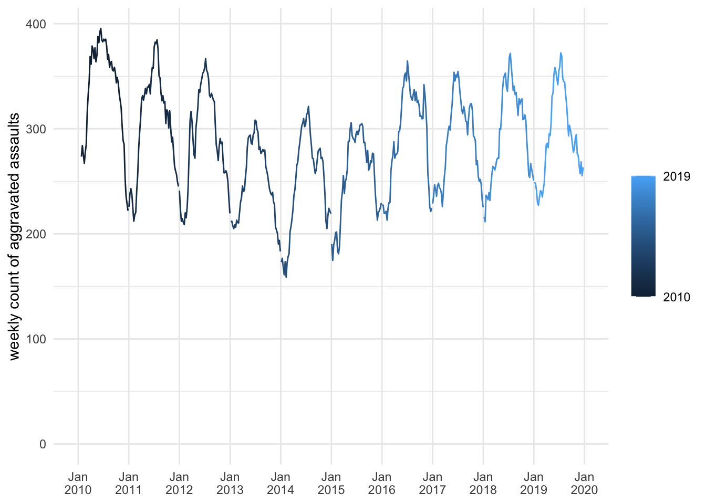
This chart might not look like you expected it to. Although the grouping of the lines by year has worked (there is a break between the lines at the start of each year), it’s no easier to compare the seasonal patterns across years. Comparing years would be much easier if we superimpose the weekly counts for each year on top of one another.
To do this, we need to trick ggplot() into plotting all the weekly counts as if they occurred in a single year, so the counts appear in the same locations on the horizontal axis of the chart, whichever year they occurred in. We can do this by creating a pseudo-date value for each weekly count which has the same month and day of the month as the original date, but a single year across all the rows in the data. We will create this pseudo date by extracting the month and day of the month using month() and mday(), then creating a new date with make_date(). We will also change the labels on the horizontal axis using the date-formatting code %e\n%b – %e means the day of the month and %b means the abbreviated name of the month.
Add this code to the end of your R script file and run it.
chapter16a.R
# Create a seasonal plot of aggravated assaults
assault_weekly_counts |>
mutate(
# Create a four-week moving average
moving_avg = slide_dbl(count, mean, .before = 3, .complete = TRUE),
# Create a new column showing just the year
year = year(week_date),
# By only specifying the `month` and `day` arguments to `make_date()` we
# will create a date in 1970 (the year that R uses by default), but that
# doesn't matter because we are not going to show the year on the chart
pseudo_date = make_date(month = month(week_date), day = mday(week_date))
) |>
ggplot() +
# Specify which columns in the data should control which parts of the chart
aes(x = pseudo_date, y = moving_avg, colour = year, group = year) +
# Add lines
geom_line(na.rm = TRUE, key_glyph = "timeseries") +
# Specify how dates should be shown on the x axis
scale_x_date(date_breaks = "1 month", date_labels = "%e\n%b") +
# Make sure y axis starts at zero
scale_y_continuous(limits = c(0, NA)) +
# Specify that the legend should be labelled at the minimum and maximum values
scale_colour_continuous(breaks = c(2010, 2019)) +
# Add labels
labs(
x = NULL,
y = "weekly count of aggravated assaults",
colour = NULL
) +
theme_minimal() +
theme(
panel.grid.minor.x = element_blank()
)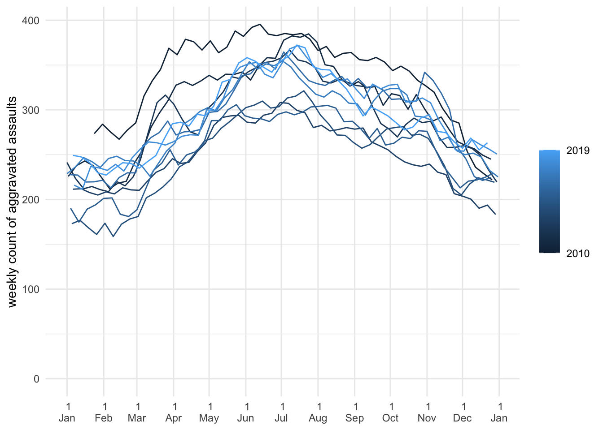
From this chart we can see that assaults consistently peak in July, although in one year they peaked slightly earlier in late June and in one year slightly later in August. At the other end of the year, weekly counts of assaults are almost always least frequent in late January and throughout February before starting to increase quite rapidly in March.
As well as showing seasonal variation, we can use the same technique to understand variation over other periods of time. For example, since we know a lot of human activities follow weekly patterns, we might want to produce a chart showing the number of crimes in each hour on each day of the week.
To do this, we:
- Extract the weekday and hour components of each date using
wday()andhour(). - Count the total number of crimes occurring in each hour of each day across all ten years of the data using
count(). - Create a pseudo-date-time using
make_datetime().
We can do this in a single piece of code. Add this R code to the R script file just after the code that creates the assault_weekly_counts object. Remember to run this chunk of code.
chapter16a.R
# Create counts of assaults by hours of the day and week
assault_hourly_counts <- assaults |>
# Extract day of the week and hour of the day from the date column
mutate(wday = wday(date, label = TRUE), hour = hour(date)) |>
# Count crimes for each hour of each day of the week
count(wday, hour, name = "count") |>
# By only setting the `hour` argument to `make_datetime()` we will create a
# date-time on 1 January 1970, but that doesn't matter because we will not
# show the date on the chart
mutate(pseudo_date = make_datetime(hour = hour))We can now create a chart with appropriate labels on the horizontal axis and a suitable qualitative colour scheme to show the days of the week using scale_colour_brewer().
R Console
# Create chart of assaults by hour of the day for each day of the week
ggplot(assault_hourly_counts) +
# Specify which columns in the data should control each part of the chart
aes(x = pseudo_date, y = count, colour = wday, group = wday) +
# Add lines
geom_line(key_glyph = "timeseries") +
# Specify how dates should be shown on the x axis
scale_x_datetime(date_breaks = "2 hours", date_labels = "%H:%M") +
# Make sure y axis starts at zero and labels have thousands separators
scale_y_continuous(limits = c(0, NA), labels = scales::comma_format()) +
# Specify a qualitative colour scheme should be used
scale_colour_brewer(type = "qual") +
# Add labels
labs(
x = NULL,
y = "hourly total of aggravated assaults, 2010-2019",
colour = NULL
) +
theme_minimal()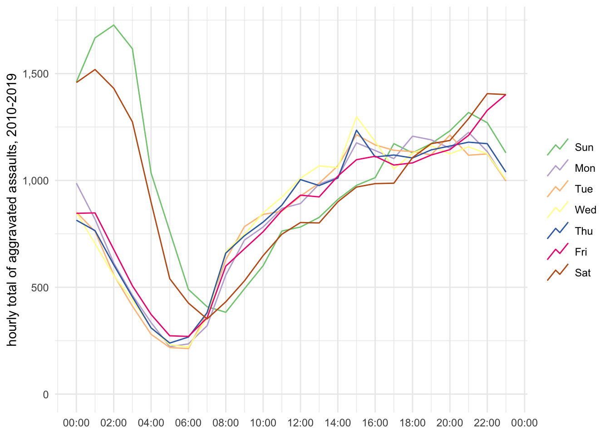
On this chart you can see that there are two distinct temporal patterns of assaults on different days of the week. Between Mondays and Thursdays, assaults peak between about 14:00 and 21:00 before reducing to a very-low level at about 05:00. At the weekend, the picture is different: assaults peak between midnight and 02:00 on both Saturdays and Sundays (i.e. very late on Friday and Saturday evenings). In fact, there are more aggravated assaults between midnight and 3am on Saturdays and Sundays than at any other time of the week.
This chart probably uses the maximum number of different colours for days of the week that we could use before some of the colours became too similar to one another to be distinguishable. But even with this many colours, it might not be easy for a colour-blind person to translate between the colours of the lines and the colours in the legend. When you find that there are too many colours on a chart, this is a good sign that you should consider using small-multiple charts instead. Fortunately, we can do this by adding a column to the data specifying whether each day is a weekday or on a weekend, then adding facet_grid() to our ggplot() stack.
Add this code to the end of your R script file and run it.
chapter16a.R
# Create chart of assaults by hour of the day for each day of the week
assault_hourly_counts |>
# Create a new column specifying if each day if a weekday or weekend
mutate(weekend = if_else(wday %in% c("Sat", "Sun"), "Sat–Sun", "Mon–Fri")) |>
ggplot() +
# Specify which columns in the data should control each part of the chart
aes(x = pseudo_date, y = count, colour = wday) +
# Add lines
geom_line(linewidth = 1) +
# Assign the facets to rows so that we can compare the same time on different
# days more easily (change `rows` to `cols` to see the alternative)
facet_grid(rows = vars(weekend)) +
# Specify how dates should be shown on the x axis
scale_x_datetime(date_breaks = "2 hours", date_labels = "%H:%M") +
# Make sure y axis starts at zero and labels have thousands separators
scale_y_continuous(limits = c(0, NA), labels = scales::comma_format()) +
# Specify a qualitative colour scheme should be used
scale_colour_brewer(type = "qual") +
# Add labels
labs(
x = NULL,
y = "hourly total of aggravated assaults, 2010-2019",
fill = NULL
) +
theme_minimal()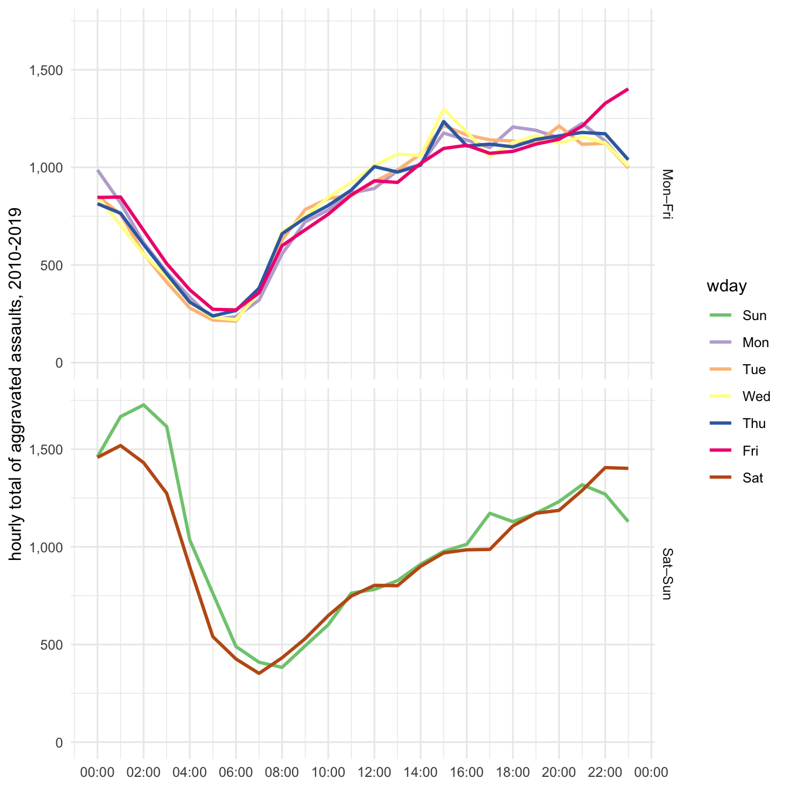
This shows the two distinct patterns (weekdays and weekends) more clearly, while also letting us see that Friday is not like other weekdays since the peak in assaults continues later in the evening. Now that we’ve created this chart using facet_grid(), we could also add columns to show the same patterns in different areas, such as police districts or local neighbourhoods, or during different seasons.
QuizShowing change over time
Which of the following is an example of a repeating pattern in crime data?
How can temporal analysis of crime deal with the multiple ways in which crime varies over time?
What does a moving average help with when analysing crime trends?
16.4 How to map change over time
Time-series or seasonal charts are often the best way to show change in the frequency of crime over time. But it can also be useful to show maps of the patterns of crimes at different points in time. We might, for example, want to show the density of crime in an area for different periods in time.
Choosing how to divide up time into periods is an important step in this process, because in doing so we are converting a continuous variable (time) into a number of categories (periods of time). Whenever we convert an continuous variable to a categorical one we inevitably lose information. For example, if we decided to categorise the maximum temperature every day as being either ‘hot’ or ‘cold’, we would lose a lot of information about whether a particular day was moderately hot, very hot, etc. The same is true of time, since by splitting time into periods (hours, days, weeks, etc.) we lose information about variations within each period. This is inevitable, since we can’t produce infinite maps showing all the infinite moments in time, but it is the reason why choosing periods carefully is important.
When choosing a period over which to count crime, it is important not to just use default periods like the day from 00:00 to 23:59 just because that is the standard definition of a day. As we saw in the previous section, the peaks of many types of crime like assaults cross over the boundaries between days because the peak frequency is late in the evening. For this reason it may be better to, for example, define a day as a period from 05:00 to 04:59 and count the number of crimes within each day according to that definition. This takes advantage of the fact that very few crimes concentrate in the early hours of the morning.
Sometimes, it will be easy to choose periods because they will be dictated by the purpose for which you’re creating the map. In this section we will create separate maps showing the density of aggravated assaults in a part of Chicago for each of the standard Chicago Police shifts of 06:00 to 13:59, 14:00 to 21:59 and 22:00 to 05:59 (bearing in mind that the actual hours some officers work may differ slightly).
To do this, we will estimate the density of assaults separately for each shift period, the combine the three density layers and plot them on small-multiple maps. First, we create a new object containing data for the Chicago Police districts we are interested in with a column showing which police shift each assault occurred in.
We can construct this column using the case_when() function from dplyr. case_when() allows us to specify any number of tests that we can apply to our data – when a test is passed the function assigns the corresponding label to that row (the label is separated from the test by a tilde character ~). case_when() is like case_match(), but for when we need to test for more-complicated things than just whether a variable has a particular value.
Add this code to your R script file just after the code that creates the assault_hourly_counts object. Remember to run the code.
chapter16a.R
# Calculate number of assaults by shift
assaults_by_shift <- assaults |>
# Restrict counts to just the central area of Chicago
filter(district %in% c(1, 12, 18)) |>
mutate(
shift = case_when(
between(hour(date), 6, 13) ~ "06:00 to 13:59",
between(hour(date), 14, 21) ~ "14:00 to 21:59",
hour(date) >= 22 | hour(date) < 6 ~ "22:00 to 05:59",
TRUE ~ NA
)
)|>
# Convert the data to an SF object
st_as_sf(coords = c("longitude", "latitude"), crs = "EPSG:4326") |>
# Transform it to a co-ordinate reference system based on metres
st_transform("EPSG:26916")
TipWhy did we include
TRUE ~ NA_character_ in case_when()?
case_when() uses a series of true/false tests to create a variable, usually based on the values of other columns in the data. To make sure that every row in the dataset is matched by at least one of the tests, it is common practice to include a final test that is always true. The easiest way to do this is to simply create a test with the fixed value TRUE, since TRUE is always true!
This catch-all test must be the last test within the case_when() function, because case_when() runs the tests in the order in which they are given and stops testing a given row in the data as soon as a test produces a true value.
In this case, we will set the label for this last test to be NA to catch any rows that have missing values of date or aren’t matched by any of our tests. Since our tests between them cover all the hours of the day, there shouldn’t be any rows that are not matched by at-least one test, but including a catch-all test makes it easier to catch any problems with our code.
There’s lot’s more to learn about the case_when() function: you can find out more by looking at the case_when() page on the dplyr package website.
Simple feature collection with 6 features and 4 fields
Geometry type: POINT
Dimension: XY
Bounding box: xmin: 444951.9 ymin: 4635831 xmax: 449271.4 ymax: 4641406
Projected CRS: NAD83 / UTM zone 16N
# A tibble: 6 × 5
date loc_cat district shift geometry
<dttm> <chr> <dbl> <chr> <POINT [m]>
1 2010-01-01 00:30:00 hotel 1 22:00 to 05… (448202.2 4635831)
2 2010-01-01 01:45:00 street 18 22:00 to 05… (446518 4641406)
3 2010-01-01 01:48:00 hotel 1 22:00 to 05… (448202.2 4635831)
4 2010-01-01 02:00:00 government 18 22:00 to 05… (449271.4 4637966)
5 2010-01-01 02:59:00 leisure 12 22:00 to 05… (444951.9 4637265)
6 2010-01-01 05:00:00 residence 18 22:00 to 05… (447278.5 4639968)The next step is to produce a kernel density (KDE) layer for assaults occurring in each shift. In a previous chapter we learned how to do this using the sfhotspot package. We could run the hotspot_kde() function from that package three times to create the KDE layers for each shift, but there is a simpler way to apply the same function to different parts of a dataset using the group_modify() function from dplyr.
Normally, when we use a function to modify a dataset, that function is applied to the dataset as a whole. With group_modify(), we can apply a function to different parts of a dataset separately but still get the result as a single tibble with a column showing which group each row relates to (which is what we need to produce a map).
group_modify() needs two inputs. The first is a grouped dataset. We already know how to specify which column in a dataset represents which group each row is in using the group_by() function. The second input to group_modify() is the name of the function we want to use to modify each group in the data. The only complication is that we have to provide the details of the function that group_modify() should use in a slightly unusual format called an anonymous function. You can see this in the block of code below. You do not need to understand the details of how an anonymous function works, but you should note two things:
- Anonymous functions start with the
~character. - In an anonymous function used within
group_modify(), you can use the special place-holder value.x(note the dot) to represent the data in each group.
So this code:
This code means ‘take the dataset some_data, group it according to the values in the some_variable column and apply the hotspot_kde() function separately to each group’. The only thing left for us to do then is to use ungroup() to remove the grouping from the result produced by group_modify() and convert that result back to an SF object using st_as_sf(). Don’t worry about specifying any arguments to st_as_sf() – R will extract information such as the co-ordinate reference system from the geometry column of the data automatically.
Add this code to the chapter16a.R code file just after the code that creates the assaults_by_shift object. Remember to run the code.
chapter16a.R
# Estimate density of assaults for each CPD shift
kde_by_shift <- assaults_by_shift |>
# Group dataset by which shift the occurred in
group_by(shift) |>
# Separately estimate density of assaults for each shift
group_modify(
~ hotspot_kde(.x, cell_size = 200, bandwidth_adjust = 0.5, quiet = TRUE)
) |>
# Ungroup the dataset
ungroup() |>
# Convert the result to an SF object (because although `hotspot_kde()` returns
# an SF object, `group_modify()` silently converts it to a tibble)
st_as_sf() |>
# Clip the result to the boundary of the three central police districts
st_intersection(cpd_central)Warning: attribute variables are assumed to be spatially constant throughout
all geometries
TipHow do anonymous functions work?
Anonymous functions in R (and in many other programming languages) are a compact way of creating a new function that we can then immediately use to modify a dataset.
We can create our own functions in R by using the function() function. For example, if we wanted to create our own version of the head() function that printed the first 10 rows of a dataset – rather than the default six rows printed by head() – we could create a function called head10():
When we call the new head10() function on a dataset, R will take whatever data we provide to that function and run all the code inside the braces {} above using that data. We can use this new function anywhere in our code after we’ve created it. For example, if we had a dataset called some_data we could view the first 10 rows of it by creating an then using our new function:
Note that inside our new function, the dataset is referred to by the name that we gave it in the parentheses () after the word function, not by the name of the dataset itself. This is important because it means our custom function will work regardless of what a particular dataset is called.
We could include lots of lines of code inside our new function, but in this case there is just one – head(x, n = 10). When we want to create a function that consists of a single line of code, we can dispense with the braces and put the whole function on one line:
Creating a new function and giving it a name is useful if we want to use the function several times in our code. But in the case of the function we need to provide to group_modify() in our code, we only need to use the new function once. In this case, we can dispense with the need to give our new function a name, and instead create an anonymous function. To do this, we replace function(x) with the ~ character.
This makes the definition of our custom function even faster, but means we can only use it inside a function such as group_modify() or map() that needs a function definition to work. Using an anonymous function also means we need some way of referring to our dataset inside the new function, since we don’t have the opportunity to define it inside parentheses after the word function. Fortunately, group_modify() understands that if we refer to .x (note the dot) inside our anonymous function, that should be interpreted as referring to our dataset.
There is a lot more you could learn about creating your own functions in R. If you are interested, you might want to work through this lesson on Creating Functions.
If we look at the result produced by this code, we can see that it looks like the output produced by hotspot_kde() except there is an extra column that we can use to distinguish the KDE value for each cell for each of the three shifts. We can use this column together with facet_wrap() to create a separate map for each shift.
Simple feature collection with 6 features and 5 fields
Geometry type: POLYGON
Dimension: XY
Bounding box: xmin: 446980 ymin: 4637342 xmax: 447685.6 ymax: 4637558
Projected CRS: NAD83 / UTM zone 16N
# A tibble: 6 × 6
shift n kde name description geometry
<chr> <dbl> <dbl> <chr> <chr> <POLYGON [m]>
1 06:00 to 13:59 0 56.7 18 District 18 ((447085.6 4637358, 447085.6 463…
2 06:00 to 13:59 4 77.1 18 District 18 ((447085.6 4637358, 447112.6 463…
3 06:00 to 13:59 0 47.1 18 District 18 ((447085.6 4637558, 447085.6 463…
4 06:00 to 13:59 0 63.9 18 District 18 ((447085.6 4637558, 447285.6 463…
5 06:00 to 13:59 2 91.7 18 District 18 ((447285.6 4637558, 447485.6 463…
6 06:00 to 13:59 4 122. 18 District 18 ((447485.6 4637558, 447685.6 463…Now we have a KDE layer for each shift, we can create three maps for the three shifts by adding facet_wrap() to a ggplot() stack.
R Console
# Add density map of assaults by shift
ggplot() +
# Add base map
annotation_map_tile(type = "cartolight", zoomin = 0, progress = "none") +
# Add density layer
geom_sf(aes(fill = kde), data = kde_by_shift, alpha = 0.75, colour = NA) +
# Add district boundaries
geom_sf(data = cpd_central, colour = "grey33", fill = NA) +
# Specify a separate map for each shift
facet_wrap(vars(shift)) +
# Specify details of legend
scale_fill_distiller(
breaks = range(pull(kde_by_shift, kde)),
labels = c("lower", "higher"),
direction = 1
) +
# Add labels
labs(fill = "density of aggravated assaults") +
theme_void() +
theme(
legend.position = "bottom",
legend.title = element_text(hjust = 1)
)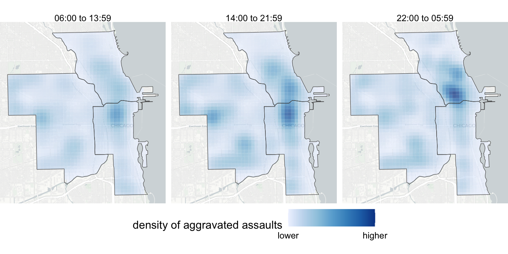
On this map we can see that some places have a relatively high density of assaults throughout all three shifts, but others only have a high density at certain times. We can perhaps make this clearer by highlighting the grid cells with the highest estimated density of assaults during each shift. We can do this using the slice_max() function from dplyr, which allows us to extract the rows in a dataset with the highest values of a particular variable. In this case we will use slice_max() together with group_by() to get the rows with the highest values separately for each shift rather than those with the highest values across all three shifts combined.
chapter16a.R
# Create new dataset containing just the cells in each shift with the highest
# KDE values
kde_shift_highest <- kde_by_shift |>
group_by(shift) |>
slice_max(order_by = kde, n = 10)
# Add density map of assaults by shift
ggplot() +
# Add base map
annotation_map_tile(type = "cartolight", zoomin = 0, progress = "none") +
# Add density layer
geom_sf(aes(fill = kde), data = kde_by_shift, alpha = 0.75, colour = NA) +
# Add layer highlighting cells with highest density on each shift
geom_sf(
aes(fill = kde),
data = kde_shift_highest,
alpha = 0.75,
colour = "red2",
fill = NA
) +
# Add district boundaries
geom_sf(data = cpd_central, colour = "grey33", fill = NA) +
# Specify a separate map for each shift
facet_wrap(vars(shift)) +
# Specify details of legend
scale_fill_distiller(
breaks = range(pull(kde_by_shift, kde)),
labels = c("lower", "higher"),
direction = 1
) +
# Add labels
labs(fill = "density of aggravated assaults") +
theme_void() +
theme(
legend.position = "bottom",
legend.title = element_text(hjust = 1)
)This map makes it very clear that the grid cells with the highest densities of aggravated assaults are very similar in the daytime and evening shifts, in both places being concentrated in the downtown area known as The Loop. For the overnight shift, however, the cells with the highest densities are on the other side of the Chicago River in the River North neighbourhood. A map like this might be particularly useful if the resources available to respond to a crime problem were very limited and so could only be deployed in the places where the problem was worst – this is often the case because crime-prevention resources are often very limited.
QuizMapping temporal change
What is one way to effectively compare crime patterns over different time periods on a map?
What is the primary purpose of the group_modify() function in R?
What is the facet_wrap() function from the ggplot2 package used for?
16.5 Making animated maps
The small-multiple map we have produced of aggravated-assault hotspots in Chicago is useful, especially for policing because it uses periods based on police shifts. But aggregating crimes into only three temporal periods inevitably throws away a lot of information about when crime happens. For example, at what time of night does the area of highest assault density move across the river from The Loop to River North?
We could produce a series of small-multiple maps showing shorter periods (meaning more small multiples). For example, we could show one small-multiple map for each hour of the day. However, this would make each map very small and it would be hard to see the details of locations on each map.
One alternative is to produce an animated map with each frame in the animation representing the map for each hour. We can do this using the gganimate package.
The first step in producing an animated map is to create a KDE layer for each hour of the day. The code for this is the same as for the code we have already used to produce the KDE layers for each shift, except that we create a variable for hour of the day rather than police shift. Because an animated map of hours of the day needs 24 KDE layers, in this case it is particularly useful to use group_modify() to avoid having to create 24 different objects and then binding them together.
Since the code to make animated maps is quite long, and our script file is fairly long already, let’s start a new script file to store the code needed to make an animated map. Restart R (Session > Restart R), open a new script file and save it as chapter16b.R.
Copy this code into that file and run the code. There is quite a lot of code here, but all of it is code we have seen earlier in this chapter.
ImportantThis code will take a while to run
This code estimates the density of crime in each grid cell 24 times (once for each hour of the day) so it is likely the code will take a few minutes to run. How long it takes to run will depend on the speed of your computer.
chapter16b.R
# PREPARE ----------------------------------------------------------------------
# Load packages
pacman::p_load(gganimate, ggspatial, sf, sfhotspot, tidyverse)
# Load Chicago aggravated assault data
assaults <- read_csv("https://mpjashby.github.io/crimemappingdata/chicago_aggravated_assaults.csv.gz")
# Load dataset of Chicago Police Department (CPD) district boundaries
cpd_districts <- read_sf("https://mpjashby.github.io/crimemappingdata/chicago_police_districts.kml") |>
janitor::clean_names() |>
# Transform this object to use a suitable local co-ordinate reference system
st_transform("EPSG:26916")
# Create a separate dataset holding just the boundaries of the three CPD
# districts covering the downtown area
cpd_central <- filter(cpd_districts, name %in% c("1", "12", "18"))
# WRANGLE ----------------------------------------------------------------------
# Create a version of the dataset with a column showing which hour the assault
# occurred in
assaults_by_hour <- assaults |>
# Keep only the CPD districts in downtown Chicago we are interested in
filter(district %in% c(1, 12, 18)) |>
# Create nicely formatted labels to represent each hour
mutate(
hour_name = str_pad(hour(date), width = 2, pad = "0"),
hour_name = str_glue("{hour_name}:00 to {hour_name}:59")
) |>
# Convert the data to an SF object
st_as_sf(coords = c("longitude", "latitude"), crs = "EPSG:4326") |>
# Convert the data to a suitable co-ordinate system for Chicago
st_transform("EPSG:26916")
# Create a grid to be used by all the KDE layers, otherwise `hotspot_kde()` will
# generate each grid based on the convex hull of the assaults occurring in each
# hour and each grid will be slightly different (which would make the animation
# flicker)
central_grid <- hotspot_grid(cpd_central, cell_size = 200)
# Calculate KDE layer for each hour of the day
hour_layers <- assaults_by_hour |>
group_by(hour_name) |>
group_modify(
~ hotspot_kde(.x, grid = central_grid, bandwidth_adjust = 0.5, quiet = TRUE)
) |>
ungroup() |>
st_as_sf() |>
st_intersection(cpd_central)
# Extract only the 10 cells with the highest density in each hour
hour_highest <- hour_layers |>
group_by(hour_name) |>
slice_max(order_by = kde, n = 10)Rows: 148636 Columns: 5
── Column specification ────────────────────────────────────────────────────────
Delimiter: ","
chr (1): loc_cat
dbl (3): longitude, latitude, district
dttm (1): date
ℹ Use `spec()` to retrieve the full column specification for this data.
ℹ Specify the column types or set `show_col_types = FALSE` to quiet this message.Warning: attribute variables are assumed to be spatially constant throughout
all geometriesTo create an animated map using the hour_layers and hour_highest objects, we use the transition_states() function from the gganimate package. transition_states() works in a similar way to facet_wrap(), in that when added to a ggplot() stack it splits the chart or map up into a separate map for each value of one of the variables in the data (in this case, the hour of the day). The only difference is that while facet_wrap() arranges those separate maps next to one another, transition_states() arranges them into an animation.
Add this code to your script file and run it.
chapter16b.R
# VISUALISE --------------------------------------------------------------------
chicago_downtown_kde_map <- ggplot() +
# Add base map
annotation_map_tile(type = "cartolight", zoomin = 0, progress = "none") +
# Add density of assaults
geom_sf(aes(fill = kde), data = hour_layers, alpha = 0.75, colour = NA) +
# Add layer showing cells with highest density of assaults
geom_sf(data = hour_highest, alpha = 0.75, colour = "red2", fill = NA) +
# Add CPD district boundaries
geom_sf(data = cpd_central, colour = "grey33", fill = NA) +
# Specify that each hour should be a separate frame in an animation
transition_states(states = hour_name) +
# Specify details of legend
scale_fill_distiller(
breaks = range(pull(hour_layers, kde)),
labels = c("lower", "higher"),
direction = 1
) +
# Add labels
labs(
title = "Aggravated assaults in downtown Chicago, 2010-2019",
subtitle = "Areas with most aggravated assaults:\n{closest_state}",
caption = "Data from Chicago Police",
fill = "density of\naggravated\nassaults"
) +
theme_void()There is one other feature of gganimate we have used in the code used to make this map. You might have noticed that in the map subtitle is the code {closest_state}. This is a special code that gganimate will replace with the current value of the variable in the data that is used to control which facet appears in each frame of the animation. So for this map, {closest_state} will be replaced in the animation with the value of the hour_name variable in the data for each frame in the animation.
One difference between animated maps and other maps we have created in previous chapters is that most of the controls that influence how a map is animated are not contained in a function we add to the ggplot() stack, but are instead included in the separate animate() function. animate() takes a ggplot() stack that includes the transition_states() function and converts it into the final animation. Among other things, animate() controls the type of file the animation will be saved in (by default, an animated GIF), the height and width of the plot and so on.
One important element that is controlled by animate() is the speed of the animation. Controlling the length of the animation is important because if the animation is too quick, it will be hard for readers to see where the hotspots in each hour are. The fps (frames per second) argument can be used to control how quickly the animation moves between each state (in this case, each hour). The higher the value of fps, the longer the animation will take. So if we wanted the animation to last twice as long as the default value, we could use fps = 2.
We can save an animated map to a file by using animate() together with the anim_save() functions. anim_save() saves the animation created by animate() in a file. For example, if we stored the map created above in an object called chicago_downtown_kde_map, we could save it to an animated GIF file.
QuizAnimated maps
What kind of crime data benefits most from being shown on an animated map?
Which of these considerations is particularly important then making animated maps?
What is an alternative to using an animated map for temporal crime analysis?
16.6 In summary
In this chapter we have learned how to incorporate change over time into our analysis of where crime happens. This is important because the distribution of crime across different places often varies at different times. Being aware of the importance of time when we make maps means we can do things like create small-multiple or animated maps for different time periods, which we could use to make sure that scarce crime-prevention resources are used at the right time as well as in the right place.
You can learn more about:
- using the different functions in the lubridate package to Do more with dates and times in R and
- animating different types of map and chart in different ways in Getting Started with gganimate.
QuizCheck your knowledge: Revision questions
Answer these questions to check you have understood the main points covered in this chapter. Write between 50 and 100 words to answer each question.
- Why is it difficult for computers to deal with dates, and how does R solve this problem?
- How can we (a) extract and (b) manipulate date and time components in R?
- What are some challenges in visualizing crime trends over time, and how can they be addressed?
- How can seasonal variations in crime be identified and visualized?
- Why is it important to consider both spatial and temporal dimensions when analysing crime?